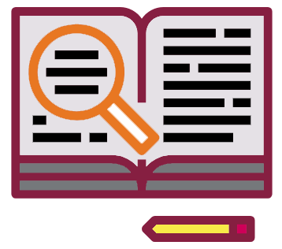

Goals
- Analyze the rhetorical situation and determine the appropriate audience or users of written communication, considering the needs of global audiences and people with disabilities. [CLO 1]
- Conduct research appropriate to workplace problem solving, such as literature review, evaluation of online resources, interview, and site inspection. [CLO 2]
- Interpret research findings with understanding of ethical and human implications. [CLO 3]
- Use conventions of various workplace genres, such as proposals, instructions, correspondence, reports, and slide decks, with understanding of how the genre conventions can be used as heuristics and as principles of arrangement. [CLO 4]
The Task
What I Want You to Do
This week we begin the recommendation report, which all of the activities in this course relate to. Your job is simply to get started by choosing the topic that you will focus on for the term. Consult the Recommendation Topic Examples for help. After you make your choice, you’ll tell me about it by answering a few questions. You will also share your topic with your small group (the groups named for birds).
Why I Want You to Do It
You need to choose and tell me what your project for the course will be since it relates to every other major project in the class. Review the Sequence of Technical Writing Projects from the Short Guide to remind yourself how the projects connect. This week, we’re at the first step of the sequence, “Choose Your Topic.”
I want you to tell me about your project now so that you have a chance to make sure your topic meets the requirements for the larger projects. It’s not fun for anyone if you get to the end of the class before you find out your topic is completely off. So I want you to tell me about your topic, but you want me to know about it too. If you start out with a good topic, everything else will be smoother.
How You Do It
- Read the Recommendation Report Overview, which explains the recommendation report assignment and the requirements that will influence your choice.
- Choose a topic for your recommendation report, keeping the information from the Overview in mind.
- Jot out a short explanation of your topic:
- Aim for about the length of a Tweet, which is 280 characters. There’s no problem if you run over.
- Make your topic specific. For example, don’t say “an intersection.” Tell us exactly what intersection in what town.
- Share your short explanation in this week’s Discussion in Canvas, following the instructions for the Topic Feedback Discussion.
- Aim to post your explanation by Wednesday so that others in your group have time to provide feedback.
- Take the feedback from your group into account, and revise your topic, if necessary.
- Answer the questions below to tell me about your topic. This week includes a Spring Break Day, so I have included short targets for your responses. I am not expecting long paragraphs (though if you want to write more, you always can).
- Submit your rough draft here by 11:59 PM on Thursday, February 4.
- If you need more time, submit your rough draft by the end of the grace period, at 11:59 PM on Monday, February 8.
Obtaining the Points for Your Work
You track and grade your own work in this course. Be sure to complete the following tasks:
- Track your work in your Weekly Work Log.
- Post your rough draft in Discussions in Canvas with a specific question, for this week’s Topic Feedback Discussion.
- Wait for me to give you points for your answers. Canvas cannot automatically grade written text, so I have to add your points manually.
- As soon as I confirm that your topic meets the requirements, I will give you full points.
- If something is missing or needs more details, you will have a chance to revise. You will still earn full points, as long as you revise.
Goals
- Analyze the rhetorical situation and determine the appropriate audience or users of written communication, considering the needs of global audiences and people with disabilities. [CLO 1]
The Task
For this Major Writing Project Activity, review the details on audience analysis and then complete an Audience Profile Sheet to prepare to write your Recommendation Report. If you have changed the topic for your report, be sure to update your audience profile.
Grading Process
When you submit your work, the points will be recorded in Canvas Grades immediately. I will review your answer. If I find that you did not put in appropriate effort or did not do the expected work, I will adjust your grade accordingly.
Getting Started
- Look back over details on audience analysis in Chapter 5, “Analyzing Your Audience and Purpose,” in Technical Communication.
- Review the Determining the Important Characteristics of Your Audience page.
- Read the biographical information in the Your Teacher, Teaching Philosophy, and Contact Information sections of the Course Manual to learn a bit more about me (your audience for the Proposal Memo).
- Think specifically about what I know about your field and the kind of writing you have chosen.
- Determine what terms, acronyms, and abbreviations you will need to explain for me to understand.
- If desired, check any of these additional sources for information about me:
Completing an Audience Profile Sheet
- Download a copy of the Audience Profile Sheet, also available in Figure 5.2 of Technical Communication, on page 87.
- Complete the Audience Profile Sheet using one of the following options:
- Copy the information from the Profile Sheet, paste it in your answer, and add the details in your response.
TIP: If you tried a strategy on paper instead of digitally, take a photo and embed it in the answer. If you need help, consult this Canvas FAQ: How do I embed images from Canvas into the Rich Content Editor as a student?
- Complete the Profile Sheet using Google Docs, and paste your Share Link as your answer.
- Ensure that your profile sheet is updated to include more information and and different reflections than what was included in your sheet for the Proposal Memo. Be specific about what you need to do to ensure that I understand your recommendations.
- Make sure your answer is clear, but you don’t need to worry about spelling, grammar, and punctuation since these are informal notes.
I have followed the Undergraduate Honor System and the Virginia Tech Principles of Community as I completed this activity.
As a Hokie, I will conduct myself with honor and integrity at all times. I will not lie, cheat, or steal, nor will I accept the actions of those who do.
I have neither given nor received unauthorized assistance on this assignment.